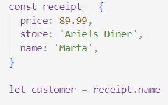
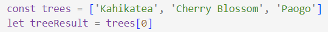
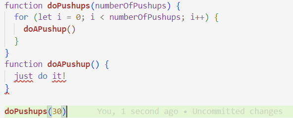
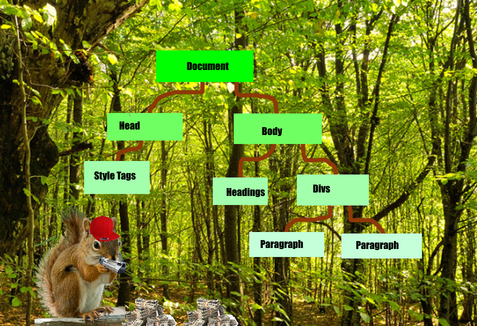

JavaScript is the galvanizing force behind a webpage. HTML and CSS can give a page form and structure, but to add any functionality beyond the most simple things, JavaScript is a necessity. A webpage without JavaScript is like a car without any mechanical or electronic features; it might look nice, and you can sit inside it if you want to, but it isn’t going anywhere. You can appreciate the design features of the vehicle, and you can still do simple things like open and close the doors, but anything sophisticated you might want it to do without having to do it yourself is going to be a bust. Javascript would link the weird paddle thing to the windscreen wipers - imagine having to get out of the car and drag them back and forth across the windscreen. That hardly seems practical. Javascript would make the horn work, not to mention turn the lights on, or begin the sophisticated process that starts the engine. In order to lend function the form that HTML and CSS create, JavaScript is required.
Objects and arrays are similar in that they behave like containers for information. This is handy because it allows us to group similar things in our code together so we can handle them as a group and retrieve our desired data points when we need them. The key difference between an object and an array is how we access the contents. An object pairs each piece of data inside with a key that can be used to retrieve it.
In this block of code, “receipt” is defined as an object with three data points and keys in its contents. The final line is an example of retrieving a data point from within this object using the appropriate key. In this instance, the variable “customer” will be defined as the string ‘Marta’, using the notation of object.key. Another handy function of objects is that they can be nested within one another, which can simplify needing to retrieve a lot of different but related pieces of information.
An array is also like a container for information, but instead of the paired data/key structure of an object, will behave like a list. This means that each item in an array has an index value that corresponds to its place in the list, beginning at 0. In the example shown, the variable treeResult will be defined as the item with index number [0], which in this case is ‘Kahikatea’. There are many ways we can operate on an array to enhance its usefulness to use - for example, we can use array.length to call the length of an array, or array.push(data) to append a new datapoint to it. Arrays are also very handy when used in conjunction with loops.
This code illustrates the simplest type of loop, a for loop. We can ignore the functions until later; the loop is defined on the second line of the block. A for loop takes three parameters, which are separated by semicolons within the parentheses. The first parameter defines the iterator, in this case i, which the remaining parameters will care about. The second is the termination condition - when it becomes false, the loop will end. In this case, when the value of i is no longer less than the length of the array called “names”, the loop will stop. It’s important to define this correctly, or a loop will continue forever, potentially crashing your computer! The final parameter is what happens to the iterator, “i”, at the conclusion of each run through the loop. In this instance, the value of i is increased by 1 every time the loop is completed. This has two consequences: the first is that i will eventually be greater than names. length which will terminate the loop as mentioned earlier. The second is related to the function that the loop calls, which is the third line. As you can see, i is used again, in this instance referring to the index number of a data point within the array! The purpose of this will become clear once you know what a function is.
In this block of code, we also see two functions. Functions are essentially tools for controlling when our code is run - a function is a block of code that has to be “called” in order to execute. Let’s look at an example of how we can use this principle of calling code when we want it (‘control flow’) using the relationship between a function and loop.
Imagine that you’re going to run this block of code yourself. If you’re someone who likes to keep fit, you might do so sometimes already! In this code, two functions are defined. The first is doPushups(numberOfPushups), which takes a parameter in the brackets, which will be defined as it runs. In this instance, it’s the number of pushups you’re going to do. When you call this function, you decide at that time how many pushups to do, and then begin the loop defined inside. You start at 0, and once you’ve counted the number of pushups you wanted to do, you’ll stop. Every time you do a pushup, you’ll add 1 to your count! Then, each time you go through the loop, it calls the second function, “doAPushup”, which is defined below. As you can see, the only way to do a pushup is to just do it, so that’s the code you’ll run when that function is called! The final and highlighted line calls the function doPushups(30), beginning the process, wherein you’ll go through the loop 30 times, doing 30 pushups! The important principle here is that although all the code prior defines the effects of the functions, it’s the final line that makes them run! Until you’ve done this step, you’ve only planned to do the pushups and when you’re going to stop doing them. It takes calling a function to make it happen! Hopefully this clarifies functions and loops, and illustrates the principle of control flow.
If we go back to the previous example, we should be able to interpret what the code does now that we can put it all together. When we call the function logNames, we pass it the array “names”. The function contains a loop that will continue until it has been run through as many times as there are items in the array. Then, for each item in the array, it will call the following function printNames(name) on it by referencing its index number, which must be equal to the iterator of the loop! Then the second function will log that item from the array out to the console. When we call logNames() on an array, we should see each item in the array logged on the console in turn.
The term “DOM” refers to the Document Object Model of an HTML file. Remember earlier when I emphasized the effects JavaScript can have on HTML and CSS? The DOM is the way that scripts can interface with these elements. The DOM is comprised of nodes, which for most (but not all!) intents and purposes refers to HTML elements. The DOM can be conceptualized as a tree, where the document, or entire HTML file, is the root, and growing from it are further HTML elements, like the <head> and <body> of the file. These are considered children of the document, and parents to any elements contained within them (their children!). Children of the same parent are described as siblings. By understanding where each element is and what its parents are, we can refer to it precisely in our scripting. To make elements easier to reference in JavaScript, it is common to apply I.Ds to them in their HTML tags, so we can grab the exact element we need through the DOM with ease. Once a script calls an element, it can do a massive variety of things! It can modify the HTML contents of the element, add and remove CSS classes, and even make an element like a button call a JavaScript function!
Hopefully this helpful diagram can elucidate the DOM for you, continuing this tired tree metaphor. It even has a squirrel!
home